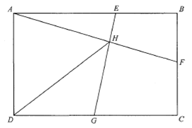

HKDSE Mathematics (Compulsory Part) Paper 2 · 2021 Q38
Topic 13 · Trigonometry — scroll the solution to animate the figure
Figure
Rect ABCDLine AFLine EGDHPoint H
Question
The figure shows the rectangle ABCD, where \(AB = 960\text{ cm}\) and \(BC = 597\text{ cm}\).
Let \(E\), \(F\) and \(G\) be points lying on \(AB\), \(BC\) and \(CD\) respectively such that
\(AE = 638\text{ cm}\), \(BF = 280\text{ cm}\) and \(CG = 480\text{ cm}\).
Denote the point of intersection of \(AF\) and \(EG\) by \(H\).
Find \(DH\) correct to the nearest cm.
A. 728 cm B. 729 cm C. 741 cm D. 742 cm

Figure (original exam diagram)
STEP 1 · Find ∠BAF in ΔABF
Tangent Ratio\(\tan\theta=\dfrac{\text{opposite}}{\text{adjacent}}\)In the right-angled \(\triangle ABF\), \(\tan\angle BAF=\dfrac{280}{960}\), so \(\angle BAF\approx16.26^{\circ}\).
\(F\) lies on \(BC\), so \(BF=280\) and \(AB=960\).
$$\tan\angle BAF=\frac{BF}{AB}=\frac{280}{960}$$
$$\angle BAF=16.26020471^\circ$$
STEP 2 · Drop perpendicular GI, find EI
Let \(I\) be the foot of perpendicular from \(G\) to \(AB\). Then \(AI=DG=CD-CG=960-480=480\).
$$EI=AE-AI=638-480=158\ \text{cm}$$
Also \(GI=BC=597\ \text{cm}\).
STEP 3 · Find ∠GEI in ΔEGI
$$\tan\angle GEI=\frac{GI}{EI}=\frac{597}{158}$$
$$\angle GEI=75.17615796^\circ$$
STEP 4 · Angle sum: ∠AHE
In \(\triangle AEH\) (vertically opposite at the crossing gives \(\angle G E I = \angle A E H\)):
Question. In the figure, \(ABCD\) is a rectangle with \(AB=800\text{ cm}\) and \(BC=600\text{ cm}\). \(E\), \(F\) and \(G\) lie on \(AB\), \(BC\) and \(CD\) respectively with \(AE=500\text{ cm}\), \(BF=240\text{ cm}\) and \(CG=400\text{ cm}\). \(AF\) and \(EG\) meet at \(H\). Find \(DH\) correct to the nearest cm.
Show the worked solution
Step 1. In \(\triangle ABF\), \(\tan\angle BAF=\dfrac{240}{800}=0.3\), so \(\angle BAF\approx16.70^{\circ}\).
Step 2. Drop the perpendicular \(GI\) from \(G\) to \(AB\). Then \(AI=DG=800-400=400\), so \(EI=500-400=100\), and \(GI=BC=600\).
Step 3. In \(\triangle EGI\), \(\tan\angle GEI=\dfrac{600}{100}=6\), so \(\angle GEI\approx80.54^{\circ}\).
Step 4. In \(\triangle AEH\), \(\angle AHE=180^{\circ}-16.70^{\circ}-80.54^{\circ}=82.76^{\circ}\), so by the sine formula \(AH=\dfrac{500\sin 80.54^{\circ}}{\sin 82.76^{\circ}}\approx497\text{ cm}\).
Step 5. \(\angle DAF=90^{\circ}-16.70^{\circ}=73.30^{\circ}\). By the cosine formula in \(\triangle ADH\), \(DH^{2}=600^{2}+497^{2}-2(600)(497)\cos 73.30^{\circ}\).
Step 6. Hence \(DH\approx660\text{ cm}\) (to the nearest cm).
Answer: \(DH\approx660\text{ cm}\)
Tip: the key is that \(H\) lies on \(AF\), so \(\angle DAH=\angle DAF\). Computing \(AH\) by the sine rule (or coordinates) then applying the cosine rule gives \(DH\).